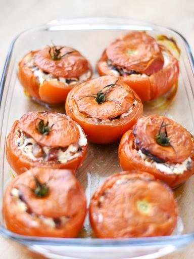

Tomates farcies chèvre lardons
Ingredients
3×
- 250 g de lardons
- 60 g de champignons
- 12 tomates
- 1 bûche de chèvre
- herbes de Provence

Préparation
Étape 1
Rissoler 250 g de lardons et 60 g de champignons. Couper le chapeau de 12 tomates et les évider.
Étape 2
Couper 1 bûche de chèvre en petits morceaux et la mélanger aux lardons et champignons. Farcir les tomates et ajouter des herbes de Provence.
Étape 3
Remettre les chapeaux et cuire 35min à 210ºC.